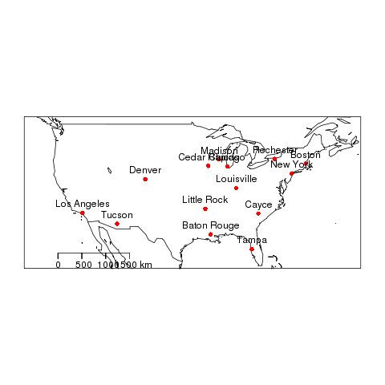
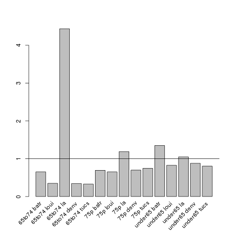
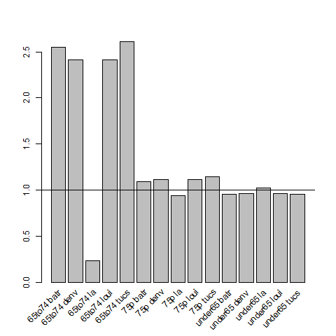
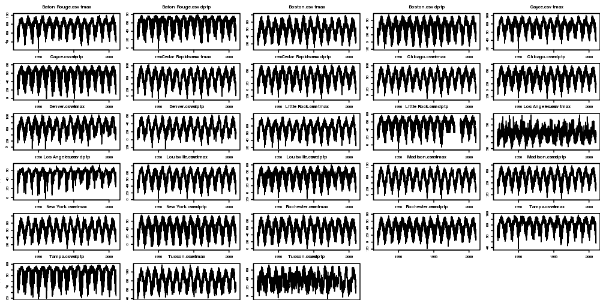
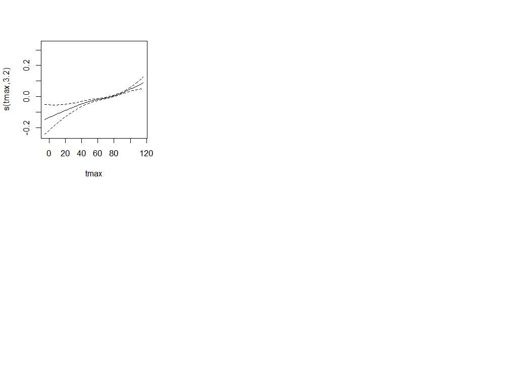
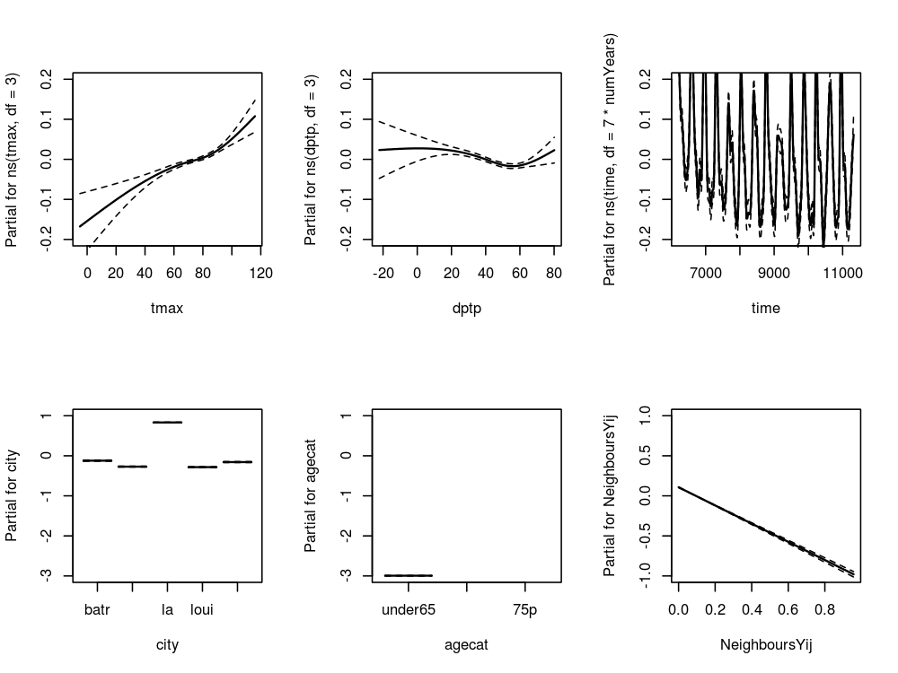

Spatiotemporal Regression Modelling
Table of Contents
1 README
# Spatiotemporal Regression Modelling This is an Open Notebook for my work on Spatiotemporal Regression Modelling tips and tricks. Ivan Hanigan
1.1 Version Statement
| 2013-10-16 |
| written R codes to scripts |
2 Case Study 1: Spatially Structured Timeseries with NMMAPS
I will use the NMMAPSlite datasets for a simple example of what I describe as "Spatially Structured Timeseries" as opposed to "Spatio-Temporal" which I think more explicitly includes spatial structure in the model.
2.1 Outcome Data
2.1.1 Original Data
" http://cran.r-project.org/web/packages/NMMAPSlite/index.html Package ‘NMMAPSlite’ was removed from the CRAN repository. Formerly available versions can be obtained from the archive. Archived on 2013-05-11 at the request of the maintainer. The Archived versions do not seem to work either. That is such a shame, lucky I saved some of the data using the following code: "
#### Code: get nmmaps data # func if(!require(NMMAPSlite)) install.packages('NMMAPSlite');require(NMMAPSlite) ###################################################### # load setwd('data') initDB('data/NMMAPS') # this requires that we connect to the web, # so lets get local copies setwd('..') cities <- getMetaData('cities') head(cities) citieslist <- cities$cityname # write out a few cities for access later for(city_i in citieslist[sample(1:nrow(cities), 9)]) { city <- subset(cities, cityname == city_i)$city data <- readCity(city) write.table(data, file.path('data', paste(city_i, '.csv',sep='')), row.names = F, sep = ',') } # these are all tiny, go some big ones for(city_i in c('New York', 'Los Angeles', 'Madison', 'Boston')) { city <- subset(cities, cityname == city_i)$city data <- readCity(city) write.table(data, file.path('data', paste(city_i, '.csv',sep='')), row.names = F, sep = ',') }
2.1.2 Pooled Dataset
################################################################ # name:Pooled Dataset setwd("~/projects/spatiotemporal-regression-models/NMMAPS-example") flist <- dir("data", full.names=T) flist <- flist[which(basename(flist) %in% c("Baton Rouge.csv", "Los Angeles.csv", "Tucson.csv", "Denver.csv") ) ] flist for(f_i in 1:length(flist)) { #f_i <- 2 fi <- flist[f_i] df <- read.csv(fi) df <- df[,c("city","date", "agecat", "cvd", "resp", "tmax", "tmin", "dptp")] # str(df) write.table(df, "outcome.csv", sep = ",", row.names = F, append = f_i > 1, col.names = f_i ==1 ) }
2.2 Exposure Data
2.3 Zones
2.3.1 Map Shapefile Code
################################################################ # name:zones # func setwd("~/projects/spatiotemporal-regression-models/NMMAPS-example") #require(devtools) #install_github("gisviz", "ivanhanigan") require(gisviz) # load flist <- dir("data") # do ## geocode flist <- gsub(".csv", "", flist) flist_geo <- gGeoCode2(flist) flist_geo ## plot png("images/nmmaps-eg-cities.png") plotMyMap( flist_geo[,c("long","lat")], xl = c(-130,-60), yl = c(25,50) ) text(flist_geo$long, flist_geo$lat, flist_geo$address, pos=3) dev.off() # load city names flist2 <- dir("data") flist2 city_codes <- matrix(NA, nrow = 0, ncol = 2) for(fi in 1:length(flist2)) { # fi <- 1 fname <- flist2[fi] print(fi); print(fname); df <- read.csv( file.path("data", fname), stringsAsFactors = F, nrow = 1) city_codes <- rbind(city_codes, c(gsub(".csv","",fname), df$city) ) } city_codes <- as.data.frame(city_codes) names(city_codes) <- c("address","city") city_codes flist_geo2 <- merge(flist_geo, city_codes, by = "address") flist_geo2 ## make shapefile epsg <- make_EPSG() prj_code <- epsg[grep("WGS 84$", epsg$note),] prj_code shp <- SpatialPointsDataFrame(cbind(flist_geo2$long,flist_geo2$lat),flist_geo2, proj4string = CRS( epsg$prj4[which(epsg$code ==prj_code$code)] ) ) writeOGR(shp, 'cities.shp', 'cities', driver='ESRI Shapefile')
2.3.2 Map Shapefile Output

2.4 Population Data
2.4.1 Population data
- A Code Skeleton
The process for getting the population data from the websites is a bit of a pain, with repeated copy and paste operations. To make sure this is recorded I set up a skeleton to paste into.
- TODO better to use gsub() to remove the ","
################################################################ # name:population-data # func setwd("~/projects/spatiotemporal-regression-models") require(gisviz) # load ## citycodes shp <- readOGR("cities.shp", "cities") shp@data cityname <- "SELECTED CITY" # do # save url # xxx population_input <- read.table(textConnection( "age: population xxx "), sep = ":", header = TRUE) ## agecats ## 65to74 75p under65 population_input$agecat <- c(rep("under65", 10), rep("65to74"), rep("75p",2) ) citycode <- subset(shp@data, address == cityname, select = city) population_input$city <- rep( as.character(citycode[1,1]) , 13 ) population_input if(exists("population")) { population <- rbind(population, population_input ) } else { population <- population_input }
- Baton Rouge
################################################################ # name:population-data # first city, remove population data.frame rm(population) # func setwd("~/projects/spatiotemporal-regression-models") require(gisviz) # load ## citycodes shp <- readOGR("cities.shp", "cities") shp@data cityname <- "Baton Rouge" # do # save url # http://www.city-data.com/us-cities/The-South/Baton-Rouge-Population-Profile.html population_input <- read.table(textConnection( "age: population Population Under 5 years: 15502 Population 5 to 9 years: 15609 Population 10 to 14 years: 15248 Population 15 to 19 years: 21954 Population 20 to 24 years: 27230 Population 25 to 34 years: 31719 Population 35 to 44 years: 30343 Population 45 to 54 years: 27166 Population 55 to 59 years: 9495 Population 60 to 64 years: 7490 Population 65 to 74 years: 13312 Population 75 to 84 years: 9611 Population 85 years and over: 3139 "), sep = ":", header = TRUE) ## agecats ## 65to74 75p under65 population_input$agecat <- c(rep("under65", 10), rep("65to74"), rep("75p",2) ) citycode <- subset(shp@data, address == cityname, select = city) population_input$city <- rep( as.character(citycode[1,1]) , 13 ) population_input if(exists("population")) { population <- rbind(population, population_input ) } else { population <- population_input }
- Los Angeles
################################################################ # name:population-data # func #setwd("~/projects/spatiotemporal-regression-models") #require(gisviz) # load ## citycodes shp <- readOGR("cities.shp", "cities") shp@data cityname <- "Los Angeles" # do # save url # http://www.city-data.com/us-cities/The-West/Los-Angeles-Population-Profile.html population_input <- read.table(textConnection( "age: population Population under 5 years old: 285976 Population 5 to 9 years old: 297837 Population 10 to 14 years old: 255604 Population 15 to 19 years old: 251632 Population 20 to 24 years old: 299906 Population 25 to 34 years old: 674098 Population 35 to 44 years old: 584036 Population 45 to 54 years old: 428974 Population 55 to 59 years old: 143965 Population 60 to 64 years old: 115663 Population 65 to 74 years old: 18711 Population 75 to 84 years old: 125829 Population 85 years and over: 44189 "), sep = ":", header = TRUE) ## agecats ## 65to74 75p under65 population_input$agecat <- c(rep("under65", 10), rep("65to74"), rep("75p",2) ) citycode <- subset(shp@data, address == cityname, select = city) population_input$city <- rep( as.character(citycode[1,1]) , 13 ) population_input if(exists("population")) { population <- rbind(population, population_input ) } else { population <- population_input }
- Tucson
################################################################ # name:population-data # func #setwd("~/projects/spatiotemporal-regression-models") #require(gisviz) # load ## citycodes shp <- readOGR("cities.shp", "cities") shp@data cityname <- "Tucson" # do # save url # http://www.city-data.com/us-cities/The-West/Tucson-Population-Profile.html population_input <- read.table(textConnection( "age: population Population under 5 years old: 35201 Population 5 to 9 years old: 34189 Population 10 to 14 years old: 31939 Population 15 to 19 years old: 38170 Population 20 to 24 years old: 47428 Population 25 to 34 years old: 76394 Population 35 to 44 years old: 72289 Population 45 to 54 years old: 57608 Population 55 to 59 years old: 19597 Population 60 to 64 years old: 16056 Population 65 to 74 years old: 29117 Population 75 to 84 years old: 21394 Population 85 years and older: 7317 "), sep = ":", header = TRUE) ## agecats ## 65to74 75p under65 population_input$agecat <- c(rep("under65", 10), rep("65to74"), rep("75p",2) ) citycode <- subset(shp@data, address == cityname, select = city) population_input$city <- rep( as.character(citycode[1,1]) , 13 ) population_input if(exists("population")) { population <- rbind(population, population_input ) } else { population <- population_input }
- Denver
################################################################ # name:population-data # func #setwd("~/projects/spatiotemporal-regression-models") #require(gisviz) # load ## citycodes shp <- readOGR("cities.shp", "cities") shp@data cityname <- "Denver" # do # save url # http://www.city-data.com/us-cities/The-West/Denver-Population-Profile.html population_input <- read.table(textConnection( "age: population Population under 5 years old: 37769 Population 5 to 9 years old: 34473 Population 10 to 14 years old: 31315 Population 15 to 19 years old: 32259 Population 20 to 24 years old: 45534 Population 25 to 34 years old: 113676 Population 35 to 44 years old: 86420 Population 45 to 54 years old: 71000 Population 55 to 59 years old: 22573 Population 60 to 64 years old: 17191 Population 65 to 74 years old: 30643 Population 75 to 84 years old: 23369 Population 85 years and over: 8414 "), sep = ":", header = TRUE) ## agecats ## 65to74 75p under65 population_input$agecat <- c(rep("under65", 10), rep("65to74"), rep("75p",2) ) citycode <- subset(shp@data, address == cityname, select = city) population_input$city <- rep( as.character(citycode[1,1]) , 13 ) population_input if(exists("population")) { population <- rbind(population, population_input ) } else { population <- population_input }
- Louisville
################################################################ # name:population-data # func setwd("~/projects/spatiotemporal-regression-models") require(gisviz) # load ## citycodes shp <- readOGR("cities.shp", "cities") shp@data cityname <- "Louisville" # do # save url #http://www.city-data.com/us-cities/The-South/Louisville-Population-Profile.html ## NB error in table, 75-84 was missing. used same from baton rouge population_input <- read.table(textConnection( "age: population Population under 5 years old: 16926 Population 5 to 9 years old: 17359 Population 10 to 14 years old: 16627 Population 15 to 19 years old: 17362 Population 20 to 24 years old: 18923 Population 25 to 34 years old: 37541 Population 35 to 44 years old: 40354 Population 45 to 54 years old: 33755 Population 55 to 59 years old: 10716 Population 60 to 64 years old: 9211 Population 65 to 74 years old: 18577 Population 75 to 84 years: 9611 Population 85 years and older: 5075 "), sep = ":", header = TRUE) ## agecats ## 65to74 75p under65 population_input$agecat <- c(rep("under65", 10), rep("65to74"), rep("75p",2) ) citycode <- subset(shp@data, address == cityname, select = city) population_input$city <- rep( as.character(citycode[1,1]) , 13 ) population_input if(exists("population")) { population <- rbind(population, population_input ) } else { population <- population_input }
- Save Population Dataset
################################################################ # name:save-population write.csv(population, "population.csv", row.names = FALSE )
2.4.2 Population Summary
################################################################ # name:Population Summary # func require(plyr) # load population <- read.csv("population.csv") str(population) population <- population[,c("city", "agecat", "population")] # do population_summary <- ddply(population, .variables = c("city", "agecat"), .fun = summarise, sum(population) ) names(population_summary) <- c("city","agecat","pop") write.csv(population_summary, "population_summary.csv", row.names = FALSE )
2.5 Merge
################################################################ # name:merge # func setwd("~/projects/spatiotemporal-regression-models/NMMAPS-example") # load outcome <- read.csv("outcome.csv") str(outcome) outcome$date <- as.Date(outcome$date) population <- read.csv("population_summary.csv") str(population) population # do analyte <- merge(outcome, population, by = c("city", "agecat")) analyte <- arrange(analyte, city, date, agecat) # check subset(analyte, date == as.Date("1990-01-01")) # save write.csv(analyte, "analyte.csv", row.names = FALSE)
2.6 Data Checking
2.6.1 Check Assumption of Proportional Hazards
# Checking the proportional hazards assumption for Indirect Age Standardisation # Background ## Indirect SMRs from different index/study populations are not strictly comparable ## because they are calculated using different weighting schemes that ## depend upon the age structures of the index/study populations ## (see http://www.statsdirect.com/webhelp/#rates/smr.htm). ## Indirect SMRs can be compared if you make the assumption that the ## ratio of rates between index and reference populations is constant; ## this is similar to the assumption of proportional hazards in Cox ## regression (Armitage and Berry, 1994). ## So we need to check if the rate ratio of the study population(s) ## compared to the standard population varies substantially with age. ## If not the proportional hazards assumption holds for the standard ## rates compared with the observed rates and the Indirect SMRs are ## comparable. To do this check we calculate the Annualised Age Specific ## Rates for our study areas and for our standard for several years at ## periodic timepoints across the study period, and then calculate the ## ratio of these at each timepoint we could reassure our selves that ## this assumption holds. ## An additional issue arises when there are non-negligible differences ## in the age distributions of the study population(s) and the standard ## population. In this situation, indirect standardisation produces ## biased results due to residual confounding by age ## Also see Australian Institute of Health and Welfare. (2011). Principles on ## the use of direct age-standardisation in administrative data ## collections For measuring the gap between Indigenous and ## non-Indigenous Australians. Data linkage series. Cat. no. CSI 12. ## Canberra: AIHW. Retrieved from ## http://www.aihw.gov.au/publication-detail/?id=10737420133 ################################################################ # func setwd("~/projects/spatiotemporal-regression-models/NMMAPS-example") require(plyr) # load analyte <- read.csv("analyte.csv") # clean head(analyte) analyte$yy <- substr(analyte$date, 1, 4) # do ## first we want to see if the age specific rates vary across the ## study sites disease_colname <- "cvd" pop_colname <- "pop" by_cols <- c("city", "agecat", "yy") stdysites <- ddply(analyte, by_cols, function(df) return( c(observed = sum(df[,disease_colname]), pop = mean(df[,pop_colname]), crude.rate = sum(df[,disease_colname])/mean(df[,pop_colname]) ) ) ) ## check head(stdysites) subset(stdysites, yy == 1987 & city == "batr") ## define the subset we will use just the deaths and pop in 2000 stdy <- subset(stdysites, yy == 2000) stdy ## now define the standard population as the entire country standard <- ddply(stdy, c("agecat"), function(df) return( c(observed = sum(df[,"observed"]), pop = sum(df[,"pop"]), crude.rate = sum(df[,"observed"])/ sum(df[,"pop"]) ) ) ) standard ## Merge the studysites and the standard stdyByStnd <- merge(stdy, standard, by = "agecat") stdyByStnd ## plot the rate ratios png("images/ratio-stdy-by-stnd.png") mp <- barplot(stdyByStnd$crude.rate.x/stdyByStnd$crude.rate.y) text(mp, par("usr")[3], labels = paste(stdyByStnd$agecat,stdyByStnd$city), srt = 45, adj = c(1.1,1.1), xpd = TRUE ) abline(1,0) dev.off() ## we can see that LA has an issue with the 65to74 agecat ## Second we will check if ratio of the proportions in each population ## agecat vary between study sites and the standard totals <- ddply(stdyByStnd, c("city"), summarise, sum(pop.x) ) totals <- merge(stdyByStnd[,c("city","agecat","pop.x")], totals) totals$pop.wt <- totals[,3] / totals[,4] totals <- arrange(totals, city, agecat) totals totalsStnd <- ddply(stdyByStnd, c("agecat"), summarise, sum(pop.x) ) totalsStnd$totalPop <- sum(totalsStnd[,2]) totalsStnd$pop.wt.total <- totalsStnd[,2]/totalsStnd[,3] totalsStnd ## merge these so we can look at the ratios totals2 <- merge(totals, totalsStnd, by = "agecat") totals2 <- arrange(totals2, agecat, city) ## now plot the ratios png("images/ratio-stdy-by-stnd-pops.png") mp <- barplot(totals2$pop.wt/totals2$pop.wt.total) text(mp, par("usr")[3], labels = paste(totals2$agecat,totals2$city), srt = 45, adj = c(1.1,1.1), xpd = TRUE ) abline(1,0) dev.off() ## and we can see that there are far fewer 65to74 aged persons in LA ## than expected.
2.6.2 Incidence Rate Ratios Plot

2.6.3 Population Rate Ratios Plot

2.7 Exploratory Data Analyses
2.7.1 Time-series Plots Code
################################################################ # name:eda-tsplots # func setwd("~/projects/spatiotemporal-regression-models/NMMAPS-example") # load flist <- dir("data") fname <- flist[7]; print(fname) df <- read.csv(file.path("data", fname)) # clean str(df) summary(df$tmax); summary(df$dptp) # do ## we will only consider cities with long periods temp and humidity observed png("images/nmmaps-eg-dateranges.png", width = 1000, height=500, res = 150) par(mfrow=c(6,5), mar=c(0,3,3,0), cex=.25) for(fi in 1:length(flist)) { #fi <- 4 fname <- flist[fi] df <- read.csv(file.path("data", fname)) print(fi); print(fname); with(df, plot(as.Date(date), tmax, type = "l")) title(paste(fname, "tmax")) with(df, plot(as.Date(date), dptp, type = "l")) title(paste(fname, "dptp")) } dev.off()
2.7.2 Time-series Plots Output

2.8 Main Analyses
2.8.1 Core Model
################################################################ # name:core # func setwd("~/projects/spatiotemporal-regression-models/NMMAPS-example") require(mgcv) require(splines) # load analyte <- read.csv("analyte.csv") # clean analyte$yy <- substr(analyte$date,1,4) numYears<-length(names(table(analyte$yy))) analyte$date <- as.Date(analyte$date) analyte$time <- as.numeric(analyte$date) analyte$agecat <- factor(analyte$agecat, levels = c("under65", "65to74", "75p"), ordered = TRUE ) # do fit <- gam(cvd ~ s(tmax) + s(dptp) + city + agecat + s(time, k= 7*numYears, fx=T) + offset(log(pop)), data = analyte, family = poisson ) # plot of response functions png("images/nmmaps-eg-core.png", width = 1000, height = 750, res = 150) par(mfrow=c(2,3)) plot(fit, all.terms = TRUE) dev.off()
2.8.2 Core Model Plots

2.8.3 Model Selection
# The following codes are just a dump of stuff I've found useful in the past. # This is all time-series methods. # TODO replace the city-specific model with a pooled analysis with city specific trend. # func require(mgcv) require(splines) ###################################################### # load dir("data") city <- "Chicago" data <- read.csv(sprintf("data/%s.csv", city), header=T) str(data) data$yy <- substr(data$date,1,4) data$date <- as.Date(data$date) ###################################################### # check par(mfrow=c(2,1), mar=c(4,4,3,1)) with(subset(data[,c(1,15:25)], agecat == '75p'), plot(date, tmax) ) with(subset(data[,c(1,4,15:25)], agecat == '75p'), plot(date, cvd, type ='l', col = 'grey') ) with(subset(data[,c(1,4,15:25)], agecat == '75p'), lines(lowess(date, cvd, f = 0.015)) ) # I am worried about that outlier data$date[which(data$cvd > 100)] # [1] "1995-07-15" "1995-07-16" ###################################################### # do standard NMMAPS timeseries poisson GAM model numYears<-length(names(table(data$yy))) df <- subset(data, agecat == '75p') df$time <- as.numeric(df$date) fit <- gam(cvd ~ s(pm10tmean) + s(tmax) + s(dptp) + s(time, k= 7*numYears, fx=T), data = df, family = poisson) # plot of response functions par(mfrow=c(2,2)) plot(fit) dev.off() ###################################################### # some diagnostics summary(fit) # note the R-sq.(adj) = 0.21 gam.check(fit) # note the lack of a leverage plot. for that we need glm ###################################################### # do same model as glm fit2 <- glm(cvd ~ pm10tmean + ns(tmax, df = 8) + ns(dptp, df = 4) + ns(time, df = 7*numYears), data = df, family = poisson) # plot responses par(mfrow=c(2,2)) termplot(fit2, se =T) dev.off() # plot prediction df$predictedCvd <- predict(fit2, df, 'response') # baseline is given by the intercept fit3 <- glm(cvd ~ 1, data = df, family = poisson) df$baseline <- predict(fit3, df, 'response') with(subset(df, date>=as.Date('1995-01-01') & date <= as.Date('1995-07-31')), plot(date, cvd, type ='l', col = 'grey') ) with(subset(df, date>=as.Date('1995-01-01') & date <= as.Date('1995-07-31')), lines(date,predictedCvd) ) with(subset(df, date>=as.Date('1995-01-01') & date <= as.Date('1995-07-31')), lines(date,baseline) ) ###################################################### # some diagnostics # need to load a function to calculate poisson adjusted R squared # original S code from # The formula for pseudo-R^2 is taken from G. S. Maddalla, # Limited-dependent and Qualitative Variables in Econometrics, Cambridge:Cambridge Univ. Press, 1983. page 40, equation 2.50. RsquaredGlm <- function(o) { n <- length(o$residuals) ll <- logLik(o)[1] ll_0 <- logLik(update(o,~1))[1] R2 <- (1 - exp(((-2*ll) - (-2*ll_0))/n))/(1 - exp( - (-2*ll_0)/n)) names(R2) <- 'pseudo.Rsquared' R2 } RsquaredGlm(fit2) # 0.51 # the difference is presumably due to the arguments about how to account for unexplainable variance in the poisson distribution? # significance of spline terms drop1(fit2, test='Chisq') # also note AIC. best model includes all of these terms # BIC can be computed instead (but still labelled AIC) using drop1(fit2, test='Chisq', k = log(nrow(data))) # diagnostic plots par(mfrow=c(2,2)) plot(fit2) dev.off() # note high leverage plus residuals points are labelled # leverage doesn't seem to be too high though which is good # NB the numbers refer to the row.names attribute which still refer to the original dataset, not this subset df[row.names(df) %in% c(9354,9356),]$date # as suspected [1] "1995-07-15" "1995-07-16" ###################################################### # so lets re run without these obs df2 <- df[!row.names(df) %in% c(9354,9356),] # to avoid duplicating code just re run fit2, replacing data=df with df2 # tmax still significant but not so extreme # check diagnostic plots again par(mfrow=c(2,2)) plot(fit2) dev.off() # looks like a well behaved model now. # if we were still worried about any high leverage values we could identify these with df3 <- na.omit(df2[,c('cvd','pm10tmean','tmax','dptp','time')]) df3$hatvalue <- hatvalues(fit2) df3$res <- residuals(fit2, 'pearson') with(df3, plot(hatvalue, res)) # this is the same as the fourth default glm diagnostic plot, which they label x-axis as leverage summary(df3$hatvalue) # gives us an idea of the distribution of hat values # decide on a threshold and look at it hatThreshold <- 0.1 with(subset(df3, hatvalue > hatThreshold), points(hatvalue, res, col = 'red', pch = 16)) abline(0,0) segments(hatThreshold,-2,hatThreshold,15) dev.off() fit3 <- glm(cvd ~ pm10tmean + ns(tmax, df = 8) + ns(dptp, df = 4) + ns(time, df = 7*numYears), data = subset(df3, hatvalue < hatThreshold), family = poisson) par(mfrow=c(2,2)) termplot(fit3, se = T) # same same plot(fit3) # no better # or we could go nuts with a whole number of ways of estimating influence # check all influential observations infl <- influence.measures(fit2) # which observations 'are' influential inflk <- which(apply(infl$is.inf, 1, any)) length(inflk) ###################################################### # now what about serial autocorrelation in the residuals? par(mfrow = c(2,1)) with(df3, acf(res)) with(df3, pacf(res)) dev.off() ###################################################### # just check for overdispersion fit <- gam(cvd ~ s(pm10tmean) + s(tmax) + s(dptp) + s(time, k= 7*numYears, fx=T), data = df, family = quasipoisson) summary(fit) # note the Scale est. = 1.1627 # alternatively check the glm fit2 <- glm(cvd ~ pm10tmean + ns(tmax, df = 8) + ns(dptp, df = 4) + ns(time, df = 7*numYears), data = df, family = quasipoisson) summary(fit2) # (Dispersion parameter for quasipoisson family taken to be 1.222640) # this is probably near enough to support a standard poisson model... # if we have overdispersion we can use QAIC (A quasi- mode does not have a likelihood and so does not have an AIC, by definition) # we can use the poisson model and calculate the overdispersion fit2 <- glm(cvd ~ pm10tmean + ns(tmax, df = 8) + ns(dptp, df = 4) + ns(time, df = 7*numYears), data = df, family = poisson) 1- pchisq(deviance(fit2), df.residual(fit2)) # QAIC, c is the variance inflation factor, the ratio of the residual deviance of the global (most complicated) model to the residual degrees of freedom c=deviance(fit2)/df.residual(fit2) QAIC.1=-2*logLik(fit2)/c + 2*(length(coef(fit2)) + 1) QAIC.1 # Actually lets use QAICc which is more conservative about parameters, QAICc.1=-2*logLik(fit2)/c + 2*(length(coef(fit2)) + 1) + 2*(length(coef(fit2)) + 1)*(length(coef(fit2)) + 1 + 1)/(nrow(na.omit(df[,c('cvd','pm10tmean','tmax','dptp','time')]))- (length(coef(fit2))+1)-1) QAICc.1 ###################################################### # the following is old work, some may be interesting # such as the use of sinusoidal wave instead of smooth function of time # # sine wave # timevar <- as.data.frame(names(table(df$date))) # index <- 1:length(names(table(df$date))) # timevar$time2 <- index / (length(index) / (length(index)/365.25)) # names(timevar) <- c('date','timevar') # timevar$date <- as.Date(timevar$date) # df <- merge(df,timevar) # fit <- gam(cvd ~ s(tmax) + s(dptp) + sin(timevar * 2 * pi) + cos(timevar * 2 * pi) + ns(time, df = numYears), data = df, family = poisson) # summary(fit) # par(mfrow=c(3,2)) # plot(fit, all.terms = T) # dev.off() # # now just explore the season fit # fit <- gam(cvd ~ sin(timevar * 2 * pi) + cos(timevar * 2 * pi) + ns(time, df = numYears), data = df, family = poisson) # yhat <- predict(fit) # head(yhat) # with(df, plot(date,cvd,type = 'l',col='grey', ylim = c(15,55))) # lines(df[,'date'],exp(yhat),col='red') # # drop1(fit, test= 'Chisq') # # drop1 only works in glm? # # fit with weather variables, use degrees of freedom estimated by gam # fit <- glm(cvd ~ ns(tmax,8) + ns(dptp,2) + sin(timevar * 2 * pi) + cos(timevar * 2 * pi) + ns(time, df = numYears), data = df, family = poisson) # drop1(fit, test= 'Chisq') # # use plot.glm for diagnostics # par(mfrow=c(2,2)) # plot(fit) # par(mfrow=c(3,2)) # termplot(fit, se=T) # dev.off() # # cyclic spline, overlay on prior sinusoidal # with(df, plot(date,cvd,type = 'l',col='grey', ylim = c(0,55))) # lines(df[,'date'],exp(yhat),col='red') # df$daynum <- as.numeric(format(df$date, "%j")) # df[360:370,c('date','daynum')] # fit <- gam(cvd ~ s(daynum, k=3, fx=T, bs = 'cp') + s(time, k = numYears, fx = T), data = df, family = poisson) # yhat2 <- predict(fit) # head(yhat2) # lines(df[,'date'],exp(yhat2),col='blue') # par(mfrow=c(1,2)) # plot(fit) # # fit weather with season # fit <- gam(cvd ~ s(tmax) + s(dptp) + # s(daynum, k=3, fx=T, bs = 'cp') + s(time, k = numYears, fx = T), data = df, family = poisson) # par(mfrow=c(2,2)) # plot(fit) # summary(fit)
3 Case Study 2: Spatial Lag and Timeseries with NMMAPS
I will use the same NMMAPSlite to show how I'd approach a simple "Spatio-Temporal" model.
- TODO The following is a stub of an idea. For further development
3.1 Data
3.1.1 Zones
- Spatial Neighbours Code
################################################################ # name:spatwat # func setwd("~/projects/spatiotemporal-regression-models/NMMAPS-example") require(gisviz) # load dir() shp <- readOGR("cities.shp", "cities") # clean head(shp@data) # do ## I will use nearest neighbour within a distance threshold, but ## usually polygon datasets would use poly2nb nb <- dnearneigh(shp, d1 = 1, d2 = 1000) head(nb) shp[[1]][1] shp[[1]][nb[[1]]] # map nudge <- 10 png("images/nmmaps-eg-neighbourhood.png") plotMyMap( shp@coords, xl = c(min(shp@coords[,1])-nudge, max(shp@coords[,1])+nudge), yl = c(min(shp@coords[,2])-nudge, max(shp@coords[,2])+nudge) ) plot(nb, shp@coords, add=TRUE) text(shp@data$long, shp@data$lat, shp@data$address, pos=3) points(shp@coords[nb[[1]],], col = 'green', pch = 16) points(shp@data[1,c("long","lat")],col = 'blue', pch = 16) dev.off()
- Spatial Neighbours Output

3.1.2 Outcome
# func setwd("~/projects/spatiotemporal-regression-models/NMMAPS-example") require(gisviz) require(plyr) # load analyte <- read.csv("analyte.csv") shp <- readOGR("cities.shp", "cities") # clean analyte$yy <- substr(analyte$date,1,4) numYears<-length(names(table(analyte$yy))) analyte$date <- as.Date(analyte$date) analyte$time <- as.numeric(analyte$date) analyte$agecat <- factor(analyte$agecat, levels = c("under65", "65to74", "75p"), ordered = TRUE ) names(analyte) analyte[1,] table(analyte$city) # do study <- analyte[, c("city","date", "agecat", "cvd", "pop")] subset(study, city == "tucs" & date == as.Date("1991-01-01")) nb <- dnearneigh(shp, d1 = 1, d2 = 1000) head(nb) head(shp@data) adj <- adjacency_df(NB = nb, shp = shp, zone_id = 'city') subset(adj, V1 == "tucs") neighbours <- merge(study, adj, by.x = "city", by.y = "V1") subset(neighbours, city == "tucs" & date == as.Date("1991-01-01")) xvars <- c("V2", "date","agecat") yvars <- c("city", "date", "agecat") neighbours <- merge(neighbours[,c(xvars, "city")], analyte[,c(yvars, "cvd", "pop")], by.x = xvars, by.y = yvars) names(neighbours) subset(neighbours, city == "tucs" & date == as.Date("1991-01-01")) neighbours$asr <- (neighbours$cvd / neighbours$pop) * 1000 neighbours2 <- ddply(neighbours, c("city", "date", "agecat"), summarise, NeighboursYij = mean(asr) ) subset(neighbours2, city == "tucs" & date == as.Date("1991-01-01")) table(neighbours2$city) head(analyte) analyte <- merge(analyte, neighbours2, by = c("city", "agecat", "date")) analyte <- arrange(analyte, city, date, agecat) head(analyte)
3.2 Analysis
3.2.1 Model with Spatial Lag
# func require(splines) # load # assumes the prior code chunks have been run # do fit <- glm(cvd ~ ns(tmax, df = 3) + ns(dptp, df = 3) + NeighboursYij + city + agecat + ns(time, df = 7*numYears) + offset(log(pop)), data = analyte, family = poisson ) # plot of response functions png("images/nmmaps-eg-sp-lag.png", width = 1000, height = 750, res = 150) par(mfrow=c(2,3)) termplot(fit, terms = attr(terms(fit),'term.labels') [c(1:2,6)], se = TRUE, ylim =c(-.2,.2), col.term = 'black', col.se = 'black') termplot(fit, terms = attr(terms(fit),'term.labels') [c(4,5)], se = TRUE, ylim =c(-3,1), col.term = 'black', col.se = 'black') termplot(fit, terms = attr(terms(fit),'term.labels') [3], se = TRUE, ylim =c(-1,1), col.term = 'black', col.se = 'black') dev.off()
3.2.2 Spatial Lag Model Plots
